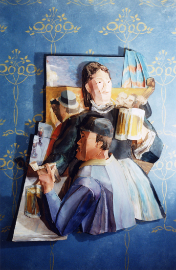
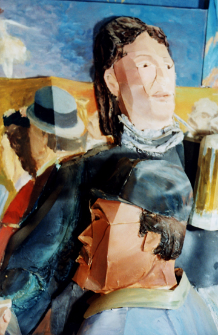
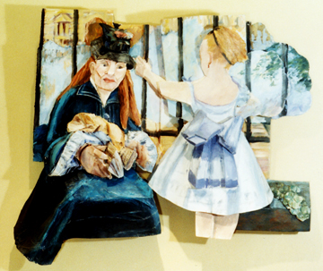
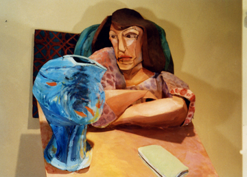

|
> Artists > Stefanie Newman > Images
Stefanie Newman

Images

Stefanie Newman, After Manet’s “At
the Bar”, 1998.
Bristol board on Paper, 3 feet w x 5 feet h x 8 inches d.

Stefanie, Newman, After Manet’s “At
the Bar”, detail.

Stefanie Newman, After Manet’s “At
the Railway Station”.
38 w x 34 h x 5 d inches.

Stefanie Newman, After Matisse’s “Woman
with Goldfish Bowl”, detail.
Images
|